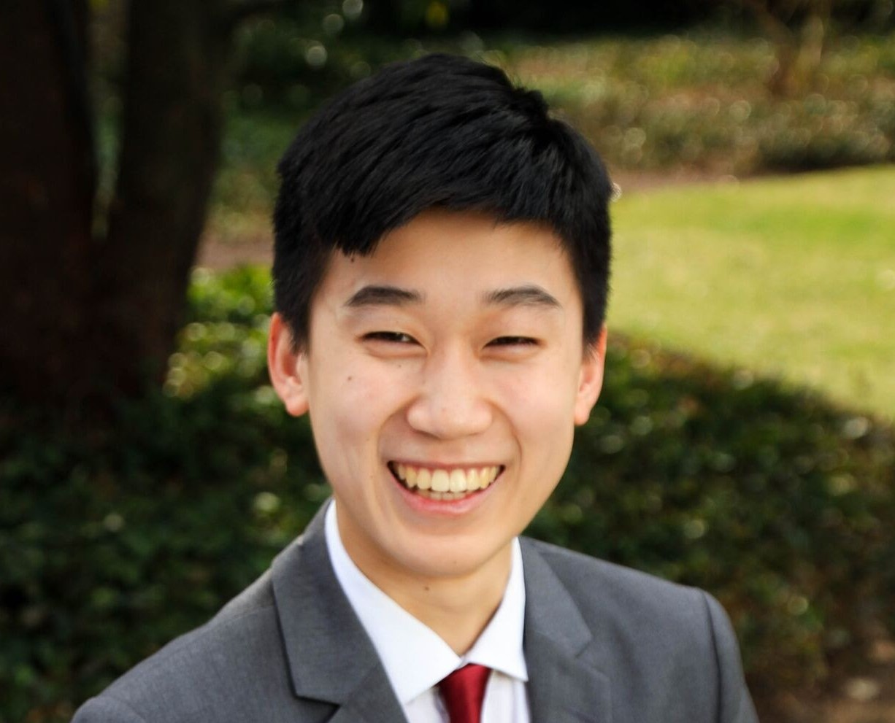

<div class='row slide'>
    <div class="col-sm-6 offset-sm-3 card">
        <div class="row">
            <div class="col-sm-4"></div>
            <div class="col-sm-8">
                <h4 class='about'>Hi, my name is Ryan Lu and I am a senior studying <span class="highlight">Biomedical Engineering</span> with a minor in <span class="highlight"> Computer Science </span> at the <span class="highlight">Johns Hopkins University</span>. </h4>

                <h4 class = 'about'> My interests lie in computational modeling, data science, and neuroscience. I previously worked as a Preclinical Computational Research Intern at <a href='https://www.nevro.com/English/Home/default.aspx/'>Nevro</a>, a medical device company focused on neuromodulation for managing chronic pain. I have also conducted research in several labs within Hopkins. </h4>

                <h4 class = 'about'> Here at Hopkins, I am also the Co-Director of <a href='http://medhacks.io'>MedHacks</a>, JHU's annual medical hackathon. I am the Head CA for Intermediate Programming, and a TA for Computational Medicine. </h4>
            </div>
        </div>
    </div>
</div>